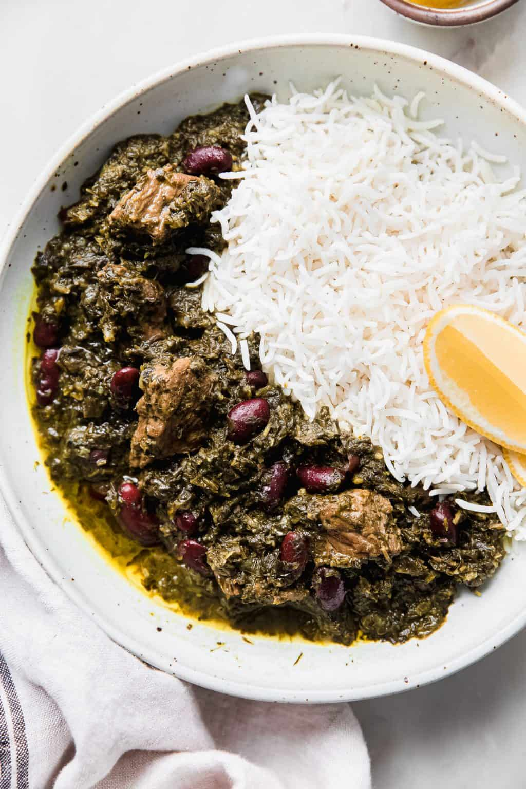

Ghorme sabzi

How to Make ghorme sabzi Step-By-Step
Ghormeh Sabzi is a traditional Persian stew made with finely chopped
herbs, kidney beans, dried limes, and meat, usually beef or lamb. To
prepare it, sauté chopped onions in oil, add turmeric, then brown the
meat. Stir in the mixed herbs (parsley, cilantro, chives, and fenugreek)
and cook until fragrant, then add kidney beans, dried limes, salt, and
water.
Let the stew simmer slowly for several hours until the meat is tender and
the flavors are well developed. The herbs should darken and the stew
should become thick and aromatic. Ghormeh Sabzi is typically served with
steamed Persian rice.
ingredients
- Beef or lamb, cut into chunks
-
Fresh herbs: parsley, cilantro, chives, and fenugreek (or dried
fenugreek)
- Onion
- Dried limes (limoo amani)
- Turmeric
- Salt and black pepper
- Cooking oil
Steps
-
Finely chop the herbs and sauté them in oil until dark green and
fragrant; set aside.
-
Sauté chopped onion in oil, add turmeric, then brown the meat pieces.
- Add the sautéed herbs and kidney beans to the pot and stir well.
-
Add dried limes, salt, pepper, and enough water to cover the
ingredients.
-
Simmer on low heat for several hours until the meat is tender and the
stew is thick and flavorful.
Home